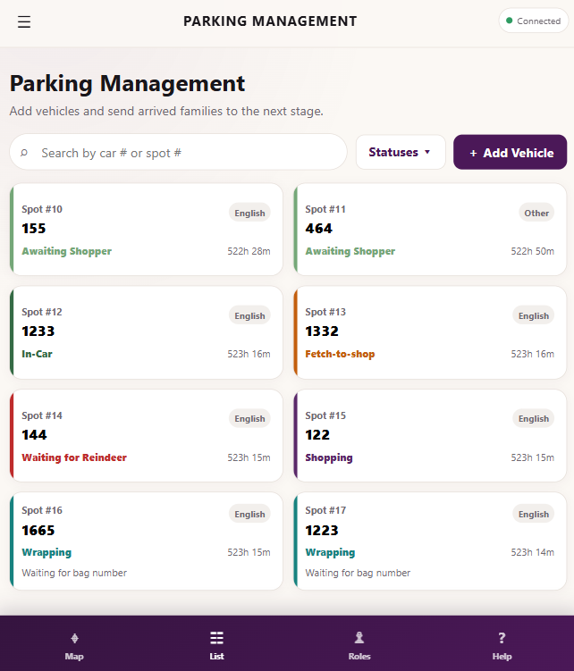

What I like building
Web apps, real-time tools, workflow systems, and projects with a clear purpose.
Hope College student · communications + computer science
I’m really interested in web development, real-time applications, and making messy processes easier to manage. Most of my favorite work comes from real problems, real users, and figuring out how to make things run smoother.
Real-time workflow tools, frontend development, and projects that solve actual day-to-day problems.
About me
I’m Ben Reasinger, a student at Hope College from Indianapolis. I switched from being a full Computer Science major to Communications with a Computer Science minor because I realized I like both sides of the work: the technical side and the people side.
I enjoy building things that people can actually use, getting feedback, and improving projects over time instead of just making something once and leaving it there.
Outside of coding, I play D1 Hockey at Hope College. I enjoy cooking, hiking, and music. My favorite artist is Sam Barber.
Web apps, real-time tools, workflow systems, and projects with a clear purpose.
Gather feedback, test it in real situations, fix what breaks, and keep improving it.
Useful software, clean interfaces, and making tools that are easy for other people to use.
Featured project
This is the project I’m most proud of. It started as a simple way to track vehicles and turned into a real-time workflow system used across multiple volunteer stations.

I built this app to help a church Christmas Store event run more smoothly. Volunteers check families in, track where they are in the process, assign shoppers, manage gift wrapping, and coordinate final delivery back to the car.
Experience
Christmas Store Event App
Linde Advanced Material Technologies
Skills
HTML, CSS, SCSS, JavaScript, responsive design, UI updates, and interface cleanup.
Firebase, Oracle E-Business Suite, Enginatics Supply Chain Hub, GitHub, database rules, authentication.
Requirements gathering, user acceptance testing, iterative releases, debugging, AI-assisted development.
Contact
Feel free to email me if you want to talk about a project, internship, or anything I’ve worked on.